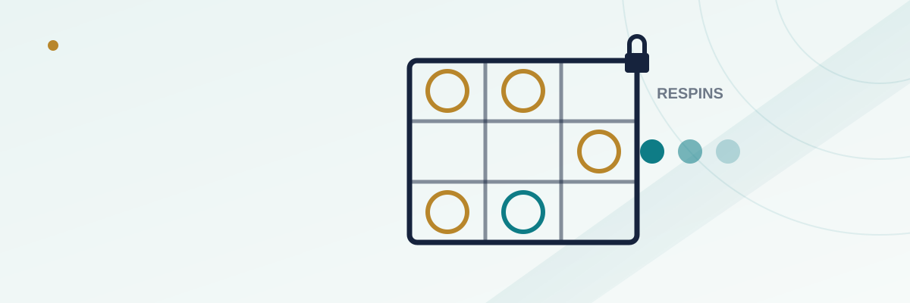

Hold and Win Slots: How the Respin Jackpot Mechanic Actually Pays

Walk past any bank of slot machines in a US casino and you'll see the same shape over and over: a 3x3 (or sometimes 5x3) grid, a scatter of coin or gem symbols frozen in place, and a counter ticking down from "3 respins" while everything else on the screen pauses. That's a Hold and Win feature, sometimes branded Lock It Link, Hold and Spin, or a dozen other trade names depending on the studio. It's become one of the most widely copied mechanics in modern slot design, and it's also one of the most misunderstood — plenty of players assume locked symbols mean a jackpot is "building," when what's actually happening is closer to a structured mini-game with its own separate math.
In this guide
What Hold and Win actually is
Underneath the branding, every version of this feature works the same basic way. A base-game spin lands two or more special symbols — usually coins, gems, or some currency icon tied to the game's theme — and that triggers a separate bonus round built on a fixed grid, most commonly 3 rows by 3 columns for a total of nine positions. Every special symbol that landed stays locked in its position. The player is then given a set number of respins, typically three, and each respin that lands a new special symbol in an empty position both adds that symbol's value to the running total and resets the counter back to three. The round ends only when the player uses up three respins in a row without landing a new symbol, or when every position on the grid fills — the second outcome is what triggers the game's top jackpot.
How the feature triggers
Studios vary the exact trigger threshold, but it's almost always tied to a minimum count of scatter-style coin symbols landing anywhere on the base-game reels in a single spin — commonly six or more on a standard 5-reel, 3-row layout, though some titles trigger with as few as three if the symbol is rarer. Because the trigger symbol typically can't land on every reel position with equal frequency (studios usually weight it lower on the first couple of reels to control how often the bonus hits), the overall frequency of reaching the feature at all tends to land somewhere in the range of once per 100 to 400 base-game spins, depending on the title's declared volatility.
How the respin counter works
Each respin inside the feature is still an independent, randomly determined outcome — nothing about having two respins left versus zero changes the odds of the next spin landing a new symbol. What changes is simply how many empty grid positions remain and how many chances the player has left to fill them. Early in the round, with a mostly empty 9-space grid, almost any new special symbol helps. Late in the round, with six or seven positions already filled, the player needs a symbol to land specifically in one of the two or three remaining empty slots, which is a narrower target even though the respin mechanics look identical to the ones that started the round.
Fixed jackpots vs. progressive jackpots inside the grid
Most Hold and Win games use one of two jackpot structures, and it's worth knowing which one you're playing before you assume a full grid means a life-changing win. A fixed-jackpot design assigns the grand prize a flat multiple of your total bet — commonly somewhere between 100x and 1,000x — awarded only when every one of the nine positions fills with a value symbol. A progressive design instead ties one or more of the top grid symbols to a jackpot pool that grows with every real-money wager placed across some pool of linked machines or players, similar to how a wide-area progressive slot jackpot grows, which is why filling the grid on a progressive-linked title can occasionally mean a payout many times larger than the fixed-jackpot version of the same mechanic.
| Jackpot type | How the top prize is set | What a full grid typically pays |
|---|---|---|
| Fixed | Flat multiple of total bet, set by the game's math model | Often 100x-1,000x bet, same every time |
| Progressive | Pool grows with wagers across linked machines/players | Varies; can be many times larger than a fixed jackpot, but resets after being won |
The math behind why it feels so close so often
Hold and Win rounds are specifically designed to feel dramatic, and the structure itself produces that feeling honestly rather than through any trickery: because the counter resets to three every time a new symbol lands, a round can drag on for ten or fifteen respins through nothing more than ordinary variance, creating the sensation of "building toward" a big result even when the eventual payout ends up modest. The grid filling to seven or eight out of nine positions and then stalling out is also a completely normal, expected outcome under the game's math — it isn't evidence the game was "about to" pay the jackpot, because each remaining respin still carries the same independent odds of landing a symbol in an empty slot as the very first respin did.
A worked example
Say a Hold and Win round triggers with six coin symbols already locked on the grid, each worth a random value when it landed, leaving three empty positions and three respins. If the first respin lands a symbol in one of those positions, the counter resets to three respins again, now with only two empty positions left. If the next two respins come up empty, the round ends with seven of nine positions filled, and the payout is simply the sum of the values on those seven symbols — no partial credit, no bonus, for having come close to a full grid. Only a sequence of respins that fills all nine positions before the counter runs out triggers the top jackpot tier, and from a six-symbol starting point, that generally requires landing specifically in each of the three remaining slots before accumulating three consecutive misses — a meaningfully harder bar than it might feel like in the moment.
Common misunderstandings
The most common misconception is treating a near-full grid as a sign the machine is "due" to complete it — it isn't, since each respin is independent of how many symbols are already locked. A second misunderstanding is assuming all Hold and Win games pay similarly because the mechanic looks identical; the underlying trigger frequency, symbol-value distribution, and jackpot structure can vary enormously between titles even when the on-screen presentation is nearly identical, which is why the same "type" of feature can have very different real-world payback behavior from one game to the next. A third mistake is chasing the feature itself — increasing bet size specifically to trigger Hold and Win more often doesn't change the underlying odds of the trigger symbol appearing; it only changes how much is at risk each time it doesn't.
Frequently asked questions
Can I buy my way into a Hold and Win feature like a bonus buy slot?
Some titles offer a separate bonus-buy option that sends you straight into the feature for a fixed cost, but many standard Hold and Win games don't offer a buy-in at all — you can only reach the feature by triggering it naturally during base-game play.
Does a higher locked-symbol count before the respins start mean a bigger eventual payout?
It generally means a higher floor, since you're already holding the value of those initial symbols, but it doesn't change your odds of filling the remaining empty positions — those stay governed by the same respin probabilities regardless of how the round started.
Is a progressive Hold and Win jackpot harder to trigger than a fixed one?
Not necessarily on the "fill the grid" step itself, but studios often make the specific jackpot-symbol rarer on progressive-linked titles, since the much larger potential payout needs to be balanced by a lower overall hit rate to keep the game's long-run math sound.
Why do some Hold and Win rounds have special symbols that upgrade in value?
It's a design layer some studios add for extra drama and variance — certain locked symbols can randomly increase in value during later respins — but it's an additional feature on top of the core mechanic, not something present in every Hold and Win game.